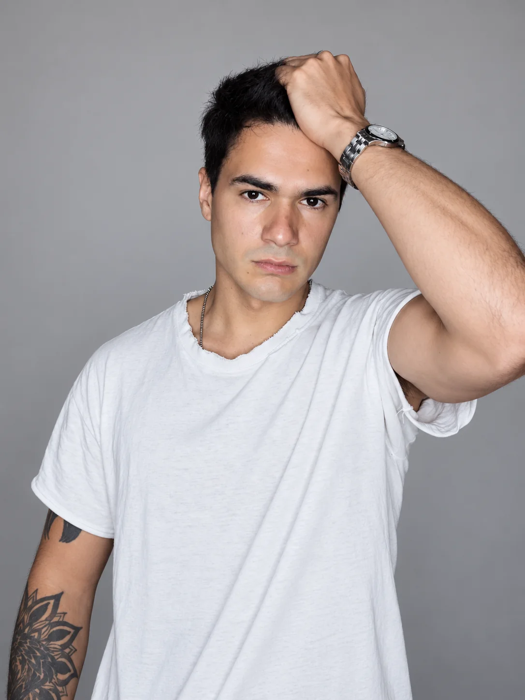
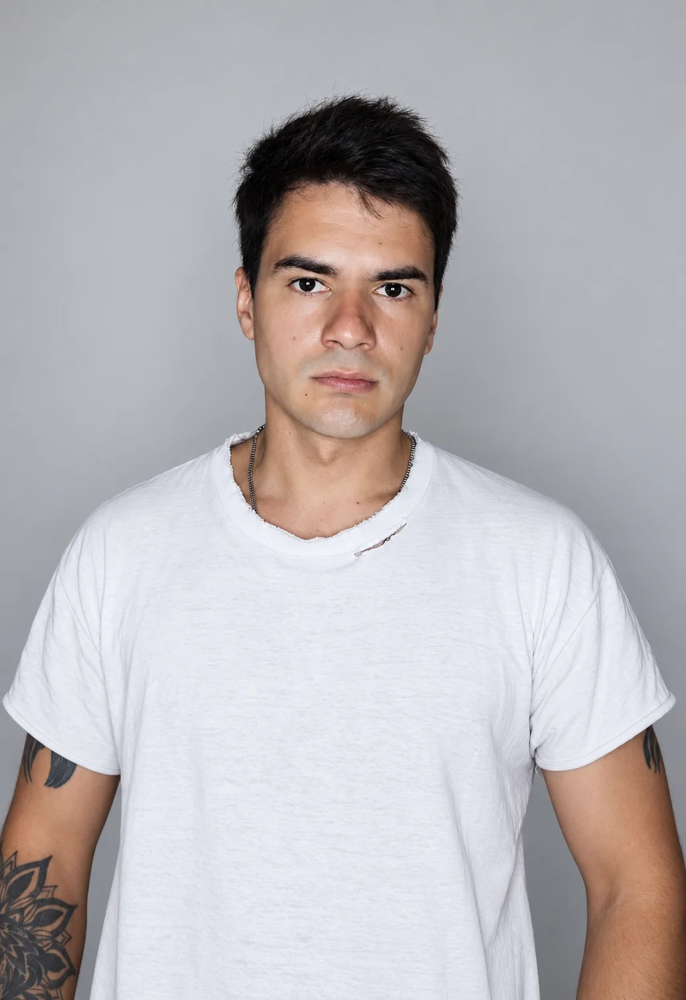
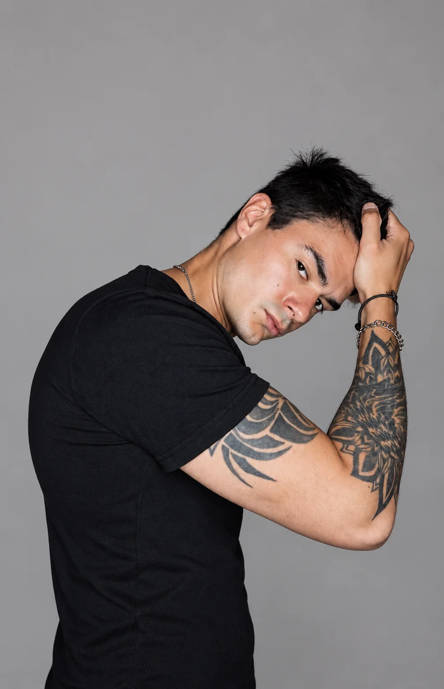
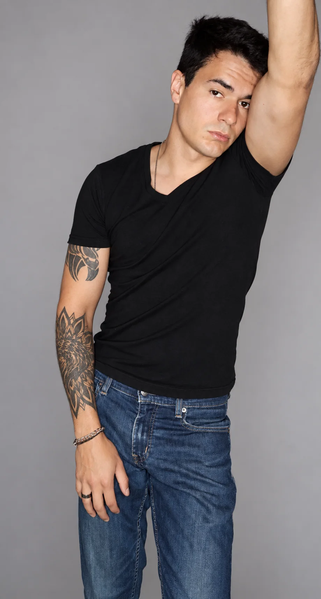
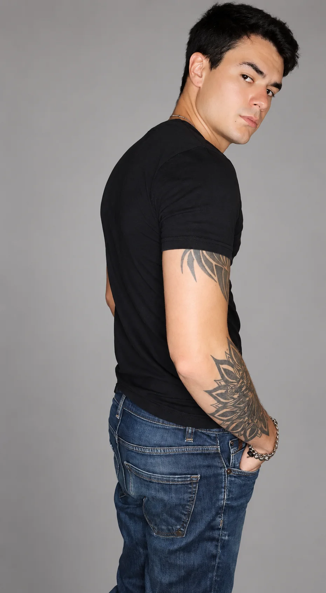
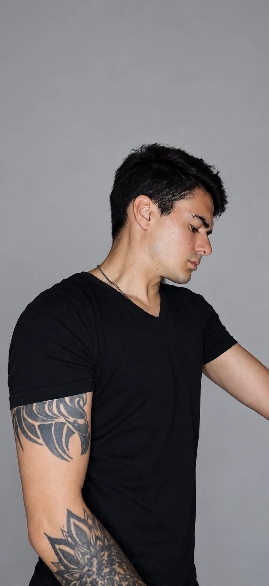
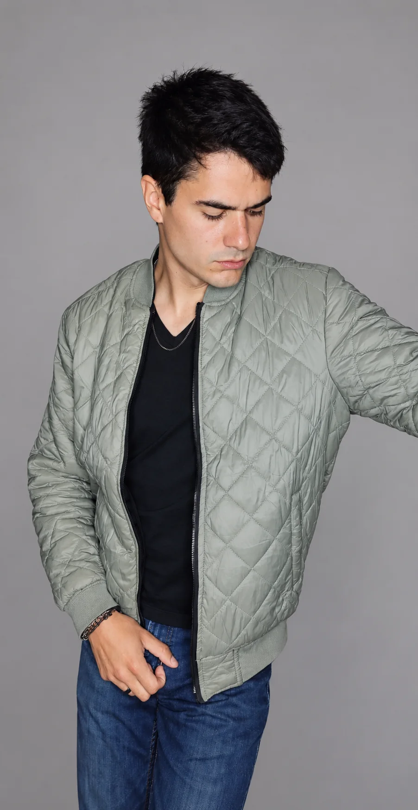
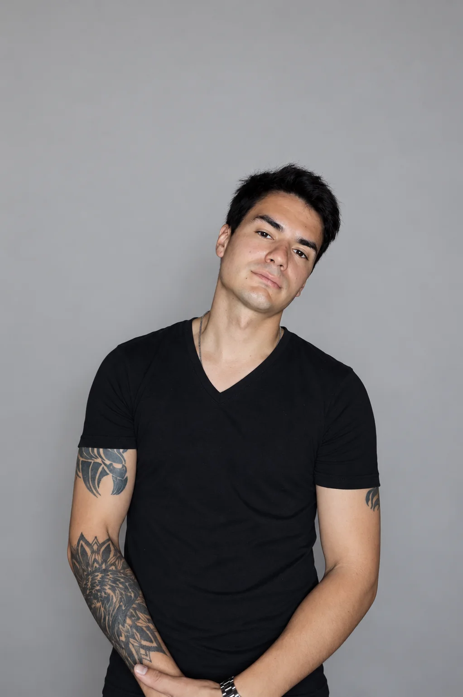

VIDEOCLIP MUSICAL
“Nectarín” — Saturno TV
Dirección: Julio “Vasco” Hormaeche
Productora: Abóbora Films
Personaje: Oso Polar
BUENOS AIRES · ARGENTINA
ACTOR · MODELO · MÚSICO
Disponible para proyectos audiovisuales, publicitarios y editoriales.

PERFIL
Actor, modelo y músico radicado en Don Torcuato, Buenos Aires, disponible para producciones audiovisuales, publicitarias y editoriales.
Mi experiencia como músico complementa el trabajo actoral con manejo escénico, presencia frente a cámara y sensibilidad artística.
PORTFOLIO
Retrato · Casting · Editorial








ON SCREEN
VIDEOCLIP MUSICAL
Dirección: Julio “Vasco” Hormaeche
Productora: Abóbora Films
Personaje: Oso Polar
VIDEOCLIP MUSICAL
Co-creadores: Lorenzo Rigau y Esteban Varela
Rol: Actor, compositor y productor
PERFIL ARTÍSTICO
Experiencia frente a cámara en producciones audiovisuales y videoclips.
Disponible para proyectos editoriales, comerciales, campañas y contenido audiovisual.
Compositor y músico con experiencia escénica y participación integral en proyectos audiovisuales.
CONTACTO